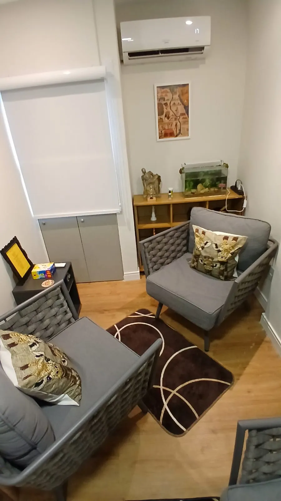
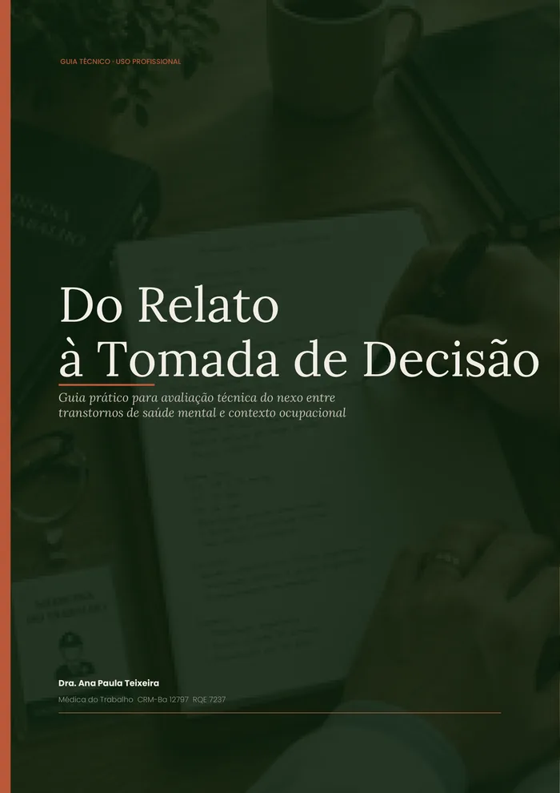

Encontro pontual
Proposta conforme contexto- 90 minutos de conversa, por Zoom ou presencial em Salvador
- Briefing por escrito antes da sessão
- Devolutiva formal em até 72h
- Gravação privada da sessão para consulta posterior
Exigem leitura técnica, confidencialidade e precisão. Sessão individual de 90 minutos, por Zoom ou presencial em Salvador, para lideranças, RH, SESMT e medicina do trabalho diante de casos concretos de adoecimento, conflito, afastamento, retorno ao trabalho ou impasses técnicos que pedem critério e responsabilidade institucional.
A agenda inicial é uma conversa breve; a sessão técnica é combinada depois. Devolutiva formal em até 72h após o Direcionamento.
O Direcionamento não é uma conversa genérica sobre saúde mental. Ele serve quando há uma situação real na mesa e alguém precisa decidir com mais critério.
Sofrimento na equipe, afastamento iminente, conflito interno ou retorno ao trabalho que precisa ser conduzido com cuidado.
Suspeita de nexo, padrão de afastamentos, queixa recorrente ou situação que exige linguagem clínica para sustentar uma decisão.
Cenário que pode virar passivo, desgaste reputacional ou decisão institucional sensível em poucas semanas.
Caso atípico, zona cinzenta entre transtorno reativo, fatores psicossociais e Lesão Moral Ocupacional.
Você pode enviar uma mensagem breve pelo WhatsApp ou marcar uma conversa inicial. Esse primeiro contato serve para entender contexto, urgência, disponibilidade e se o Direcionamento é mesmo o melhor formato.
Antes da sessão, você envia uma descrição de até uma página. A conversa já começa com contexto.
A conversa organiza contexto, leitura clínica, riscos e próximos passos. A gravação é privada, para consulta posterior.
Você recebe uma página com pontos centrais, encaminhamentos e referências técnicas quando aplicável.

Sessão única para uma decisão pontual. Pacote de três encontros para acompanhar desdobramento em ciclo curto.
Também existe mentoria individual sob demanda para médicos do trabalho e profissionais de saúde ocupacional. Disponibilidade limitada, mediante consulta.
Um guia de 27 páginas para profissionais que precisam avaliar, com método, a relação entre transtornos mentais e contexto ocupacional. Baseado na Resolução CFM 2.323/2022 e na NR-1.
Receber o guia gratuitamente →
Envie um resumo breve pelo WhatsApp ou marque uma conversa inicial pela agenda.